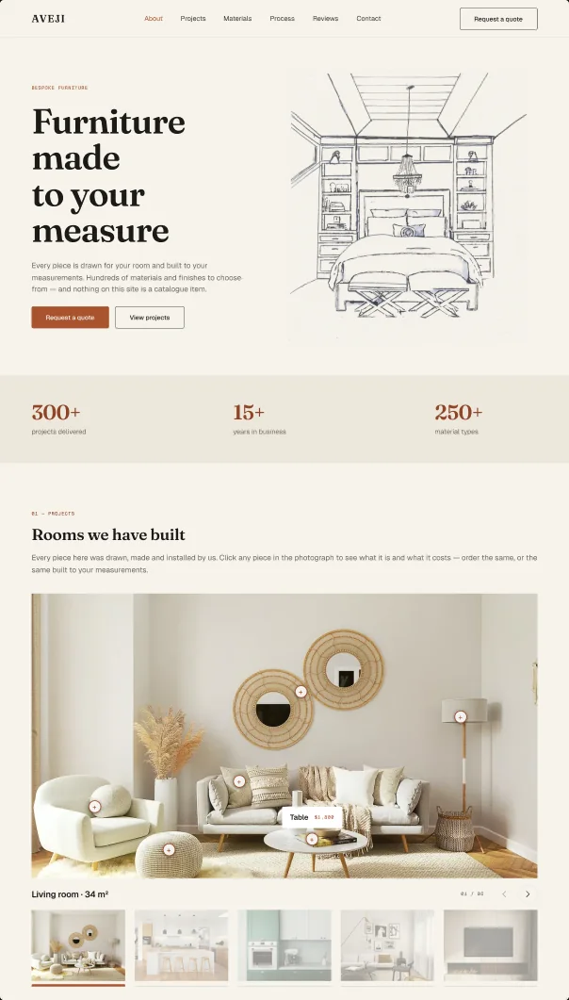
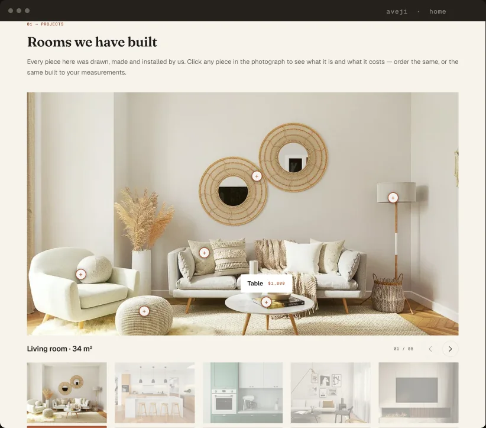
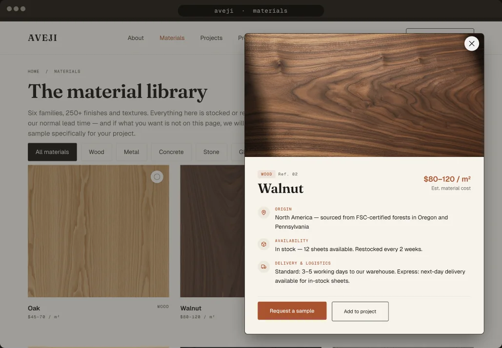
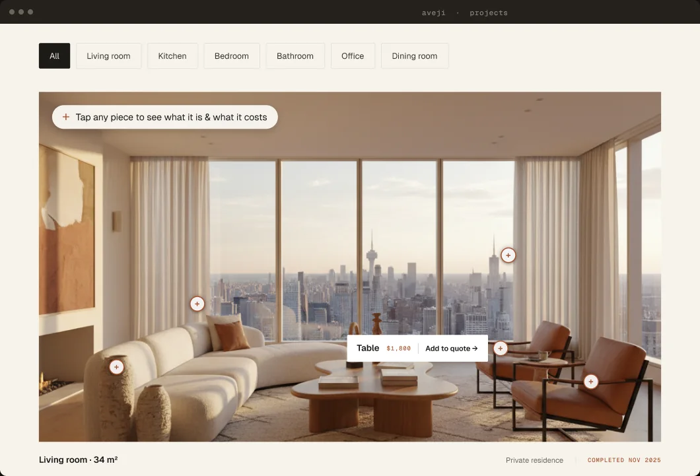
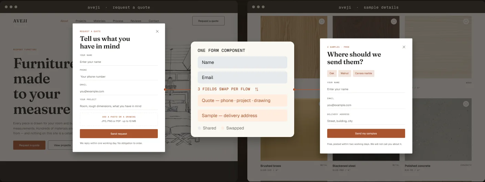
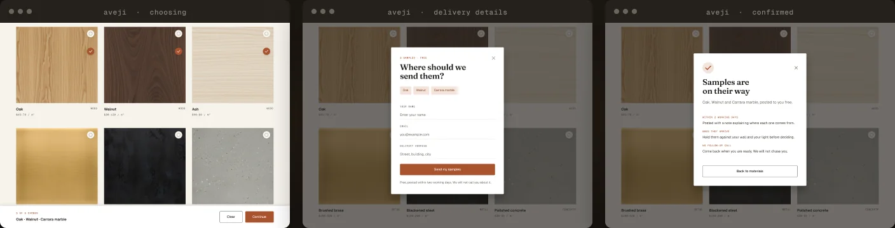
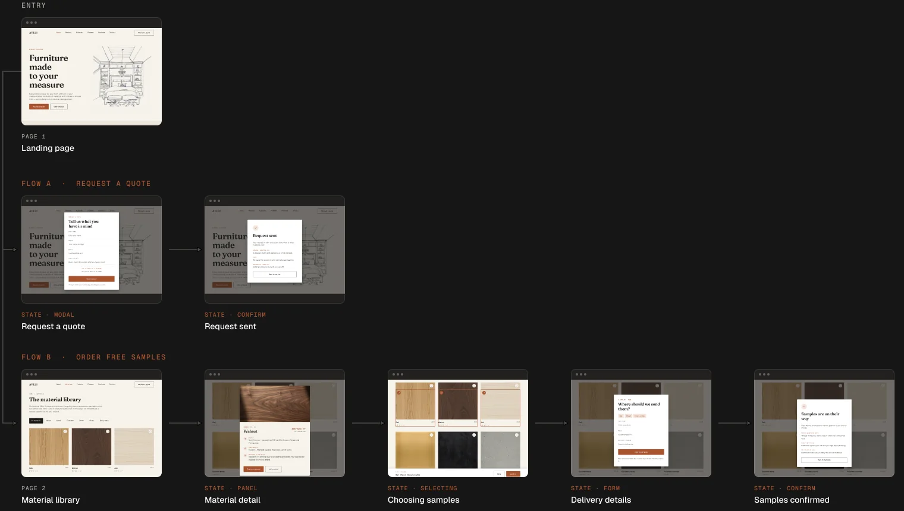

03 · Bespoke furniture · Client site
Every furniture site looks the same. This one starts with a pencil.
A landing page, a materials library, a project gallery and two conversion flows for a bespoke furniture maker, designed from scratch. The site competes on layout, not on photography budget.

01 — The problem and the move
Furniture sites are photo-led, so they all look alike.
Every competitor opens on the same kind of photograph: a styled room, soft light, a sofa. A bespoke maker sells something a stock photo can't show: that the piece is drawn for your room first. So the site leads with the drawing, not the photograph.
A script typeface to carry the “drawn for you” idea. It turned out to be Windows-only and can't be served as a webfont, so on most visitors' screens it would have silently fallen back to something else.
The idea survived by moving out of the typeface and into the hero's line drawing, with Fraunces and Geist doing the reading. Same concept, and now it renders the same for everyone.
02 — The landing
Fewer images, much larger.
Same photographs and the same budget the brief allowed. What changed was the room each one was given.

One room at full width instead of a grid of thumbnails. Same photo budget, spent on scale.
Every piece in the room is a hotspot: tapping one names it and gives its price.
The carousel shows 01 / 05, so a visitor always knows how much is left to see.
03 — Materials
Six families, 250+ finishes.
A browsable library with family filters, a detail panel for each material, and a sample flow capped at five picks.

04 — Projects
Rooms, filtered by the room.
A featured project, a filterable grid, and clickable pieces inside each photograph: click a table to see what it is and what it costs.

Every piece in the photograph is clickable. The price sits on the object, not in a list you have to cross-reference.
People furnish a room, not a product category. The filters match how the request arrives.
Five markers stay closed and one opens, so the photograph stays the argument.
05 — Conversion
Two flows, one form component.
Quote requests and sample orders share a single form, so the two can never drift apart. Name and email are shared; three fields swap per flow.

A modal over the landing page: name, phone, email, project, and an optional drawing.
The same form component, with three fields swapped for the delivery address.
06 — Sample flow
Choose five, and they arrive in the post.
Selection happens on the page with a running count, so the five-sample limit is visible while browsing rather than enforced by an error afterwards.

Tick up to five: the ring and the running count carry the state.
The same form component, address fields only.
Confirms what was picked and when it posts.
07 — User path
Every screen, every state, and the path to it.
Two flows branch from one landing page. Nine screens, and only two of them are pages: the rest are states of a screen that already exists.

08 — The system
Built to be handed over.
Designed from scratch alongside the screens, so the system describes the product rather than being retrofitted onto it.
Every piece is drawn for your room
01 — MATERIALS
09 — Judgement calls
Three decisions that weren't in the brief.
My first accent, a soft violet-blue, measured 3.80:1 on white and it carried the form labels. That fails WCAG AA, so it went. Clay at 4.78:1 does the same job and passes.
The brief asked for a five-step process. The first two were really one conversation, so I merged them, shipped four, and said so on the page rather than padding a step.
The reviews section borrows the conventions people already trust from review platforms. Inventing a new pattern there would only cost credibility.
In short
A small brand that competes on layout, not on budget.
The same photographs a bigger competitor could outspend, given far more room, and a drawing in front of them that says what a catalogue can't: this will be made for you.